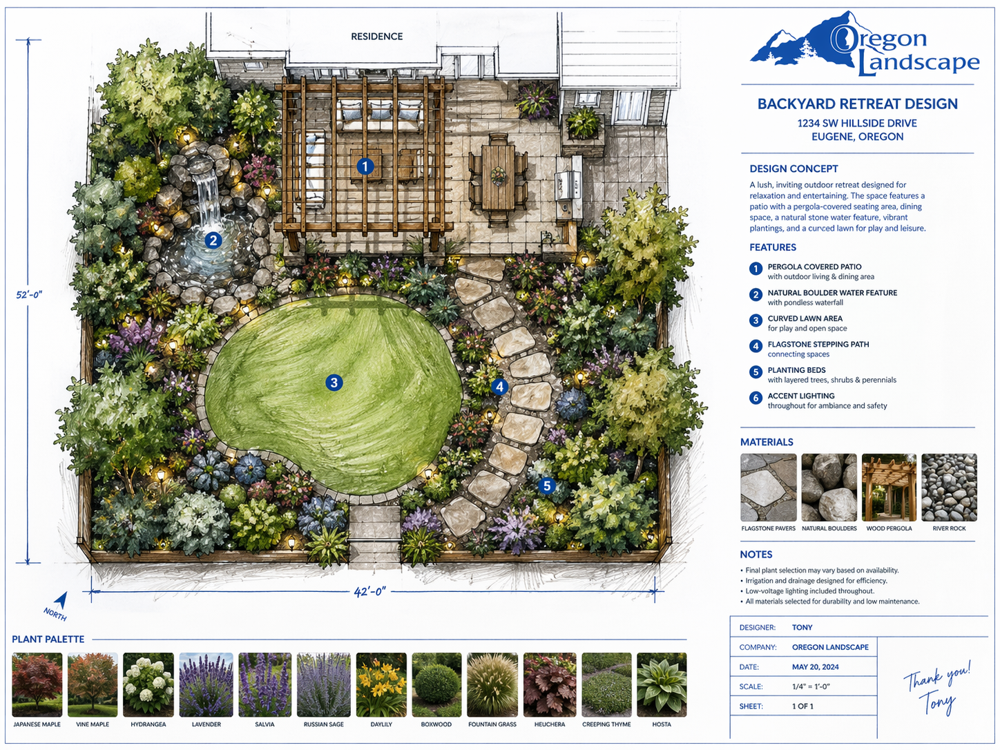

Landscape design for Milwaukie — established neighborhoods, Willamette riverfront properties, and custom outdoor spaces close to Portland.
Milwaukie's established neighborhoods have a character worth honoring — mature trees, older lots with real depth, and a riverfront setting that makes outdoor living especially worthwhile. Oregon Landscape designs landscapes that fit these properties and the people who live in them.
From small courtyard gardens to full backyard transformations with patios, planting, and lighting, we bring the same attention to detail to every Milwaukie project regardless of scope or budget.
Get a Free Estimate

Natural stone, pavers, and concrete designed to flow with your landscape and stand up to Oregon weather for decades.

Ponds, waterfalls, and fountains that add movement, sound, and life to your outdoor environment.

Fire pits, kitchens, seating walls, and pergolas — outdoor rooms built around the way you entertain and relax.

Architectural and accent lighting designed into the landscape plan so your yard is just as beautiful after dark.

Species selected for Pacific Northwest conditions — four-season interest, right plant in the right place, every time.

Quality lawn installation with smart irrigation systems built into the design from the very beginning.


Milwaukie lots tend to be smaller than the suburban average, which means design needs to work harder — every square foot counts. We're experienced at creating high-impact outdoor spaces within tight footprints where thoughtful design matters more than square footage.
Yes — Milwaukie has a tree preservation ordinance that regulates removal of trees above a certain caliper size. We identify any regulated trees before design and build the preservation or removal decision into your plan early to avoid delays.
Milwaukie is about 10–15 minutes from our Clackamas base on SE Morning Way. That proximity means we can respond quickly, check on projects frequently during installation, and keep material deliveries efficient.